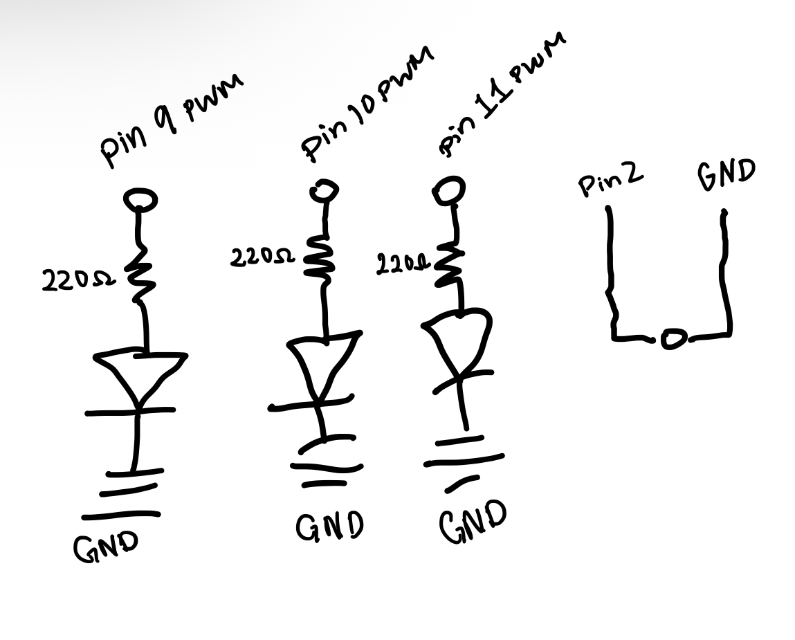

Schematic
As an employee at the toy company,
I propose a "control traffic" game. This games includes
pressing a black button that colors the colors green, yellow
and red. At each push the color changes from Green to yellow to Red.
Once the button is pressed the color is faded to brightness this is
also meant to be a timer for the cars

Circuit
I have 3 LEDs, green, yellow and red. Each represent a traffic light
there is a resistor on each of them of 220V, each color also connects to ~9, ~10, ~11.
I used these pins becuase they support PWM, which let's us control how bright each color is.
GND is connected to the 0V supply, green, yellow and red are connect to GND through that supply.
1: Draw a chart where the X axis is time and the Y axis is voltage. Draw 3 lines representing the voltage across an LED with analogWrite(led, 64), analogWrite(led, 128), and analogWrite(led, 255).

2: If all your LEDs were on simultaneously, what would the total current draw be? Is this above or below the total Arduino current draw limits? If all your LEDs were on, how long would your
circuit run if powered by a 1200 mAh battery?
Simultanuesly it would be: I LED = 4 x 20 mA = 80mA
Each LED draws 20 mA, which is within the commonly recommended operating current per Arduino Uno I/O pin.
The four LEDs draw 80 mA combined, which is below the ATmega328P's 200 mA absolute maximum for the microcontroller's supply pins.
The Arduino itself also consumes current, so its total draw will be higher than 80 mA.
3: Measure and record the actual voltage across one of your LEDs when it's on. How does this compare to the theoretical forward voltage for your LED color?
4: Did you use AI tools in completing this assignment? If yes, please provide details on how/when, as well as a brief reflection. If no, you can either leave this question blank, or provide other information if you'd like.
I used ai to help me with the debuging arduino